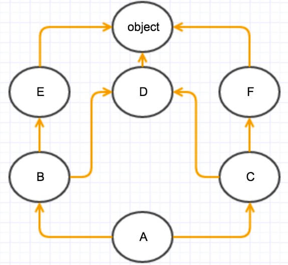

今天突然看到一篇文章Python: super 没那么简单 ，受其启发，然后查阅了一些其他文章，整理如下。
问题的产生
python是一个可以多重继承的编程语言，本文以如下多重继承的事例提出问题。
1 | class A(object): |
结果如下：
1 | self is <__main__.D object at 0x10ce10e48> @D.add |
从子类D开始，调用顺为什么会是D->B->C->A？
在B中执行了super(C, self).add(m)，B的父类是A，为什么却先执行了C中的add方法？
带着这两个问题，我们进入正题。
MRO
在正式解决这两个问题之前，先介绍一个基础知识。由于python的这种多重继承机制，多继承的语言往往会遇到以下两类二义性的问题：
- 有两个基类A和B，A和B都定义了方法f()，C继承A和B，那么调用C的f()方法时会出现不确定。
- 有一个基类A，定义了方法f()，B类和C类继承了A类（的f()方法），D类继承了B和C类，那么出现一个问题，D不知道应该继承B的f()方法还是C的f()方法。
为了解决这种二义性问题，python使用MRO(Method Resolution Order)来处理。
MRO是一个搜索列表，如果一个类C中的方法foo()是从他的祖先类中继承来的，当我们要调用C的这个继承来方法foo()的时候，python需要按照一定的顺序遍历其祖先类来找到这个方法的具体实现。 MRO就是这么一个查找顺序的列表。按照这个顺序逐一查看各祖先类，找到的 第一个实现了的foo() 将作为C的foo()方法。
在python历史上，MRO使用过DFS(Depth-First-Search)、BFS(Breadth-First-Search)和C3算法实现。从python2.3开始都是使用C3实现的MRO。在python2.x中可以通过D__mro__ 来拿到D的MRO列表 (__main__.D, __main__.B, __main__.C, __main__.A, object) 。
C3算法是一种使用图论的拓扑排序方法。如下图所示，如果有如下的类继承关系，我们使用拓扑排序算法来得到类A的MRO列表。

- 找入度为0的点，只有一个A，把A拿出来，加入列表； ——-> [A]
- 把A相关的边剪掉，再找下一个入度为0的点，有两个点(B, C)，取最左原则，拿B；——-> [A, B]
- 剪掉与B相关的边，这时候入度为0的点有E和C，取最左； ——-> [A, B, E]
- 剪掉与E相关的边，这时只有C点入度为0，取C； ——-> [A, B, E, C]
- 剪掉与C相关的边，得到两个入度为0的点（D, F），取最左D； ——-> [A, B, E, C, D]
- 然后剪D相关的边，那么下一个入度为0的就是F，然后是object。那么最后的排序就为[A, B, E, C, D, F, object] 。
super()的作用
当我们调用 super() 的时候，实际上是实例化了一个 super 类。
在大多数情况下， super 包含了两个非常重要的信息: 一个 MRO列表以及 MRO 中的一个类。
如：在上面的例子中self 指的是对象d(D的实例)，实例super(B, self) 可以通过type(self).__mro__得到MRO列表(D, B, C, A, object)，B指示了当前的类B在MRO列表中的位置。
当在类B中调用super(B, self).add(m)时，Python个解释器将会按照MRO列表中从B开始向后查找含有add方法的类，即按照C, A, object的顺序。
通过以上解释也就决了开头提出的两个问题。
多重继承二义性举例
除了显示的使用super以外，如果子类D的多个父类都实现了同一个方法add，那么调用子类D的add方法时到底调用了哪一个父类中实现的add方法呢？其实Python也是按照MRO的顺序来确定的。
1 | class A(object): |
重新修改文章开头部分的代码，如上所示，此时，D同时继承了B和C，E同时继承了C和B。
按照MRO列表，d.add()调用的是类C中定义的add方法。 (D, B, C, A, object)
e.add()调用的是类B中定义的add方法。(D, C, B, A, object)